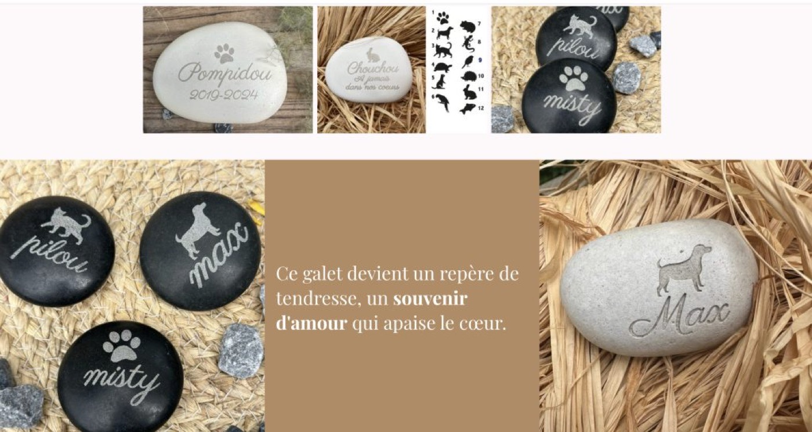
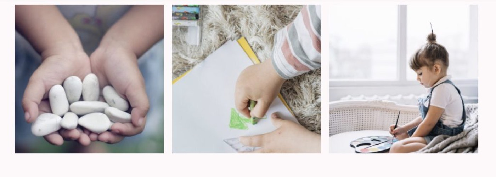

Perdre un animal, c’est perdre un membre de la famille. Un compagnon fidèle, un confident silencieux, un lien unique… Alors comment traverser cette douleur ? Et comment aider un enfant à faire le deuil de son petit compagnon à quatre pattes ?
Chez l'atelierinspire.fr, nous croyons que les objets peuvent porter du sens, du réconfort… et de la mémoire. C’est pourquoi nous avons créé une collection de galets funéraires pour animaux, conçus pour symboliser l’amour, la gratitude et le souvenir.

Pourquoi un galet pour un animal ?
Parce que la pierre est stable, durable, naturelle.
Et parce que le galet évoque la douceur, la rondeur, la paix.
Un galet gravé peut être :
• Posé dans un jardin, à l’endroit préféré de l’animal.
• Glissé dans une boîte à souvenirs.
• Conservé dans la chambre d’un enfant comme un objet de lien.
• Déposé au pied d’un arbre, ou dans un coin symbolique de la maison.
Un objet symbolique mais aussi un rituel
Et si on parlait aux enfants ?
Comment leur expliquer la mort de leur animal ?
Comment leur permettre de garder un lien, sans refouler leur tristesse ?
Un galet peut devenir un support de parole, un geste d’adieu, un petit rituel.
Voici quelques idées que tu peux mettre en place avec eux :
• Choisir ensemble la gravure : le prénom, une patte, un cœur, ou une petite phrase comme “Toujours dans mon cœur”.
• Créer un moment de souvenir : allumer une bougie, raconter des anecdotes, enterrer le galet ou le déposer ensemble dans un endroit aimé.
• Laisser l’enfant exprimer ses émotions : avec des mots, un dessin, ou en tenant simplement le galet dans ses mains.

Des galets uniques pour
des compagnons uniques
Sur notre site, tu trouveras une sélection de galets personnalisés pour animaux.
Chaque galet est gravé à la main avec soin, sur une pierre naturelle douce au toucher, dans des formes simples et rassurantes.
Tu peux y faire inscrire :
• Le prénom de ton animal.
• Une date ou une année.
• Une phrase tendre comme “Merci pour tout” ou “Mon fidèle ami”.
• Une empreinte ou une petite icône (patte, cœur, étoile…).
voici un lien de commande;